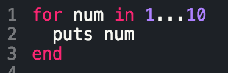
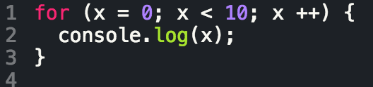
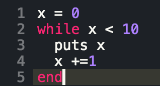
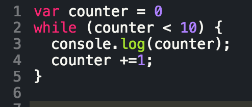

Looping in Ruby vs. Looping in JavaScript
Variable Scope
August 2, 2015
I definitely took Ruby for granted before learning a bit more of JavaScript. The syntax of JS is a lot less friendly than Ruby, and a lot less forgiving. Loops are essential for having your code iterate, and looping is a bit more limited in JS than it is in Ruby.
| Ruby Looping vs. JavaScript Looping | |
|---|---|
| Ruby | Javascript |
|
|
|  |  |
|  |  |
These two loops more or less perform the same function. They go through each item in a given range and do something to each of those items. The only real difference is the syntax of how they're written. The other major difference is the scope of variables amongst JS and Ruby. In JS, any variable defined within a function is local to only that function and if any variable is defined outside of a function it is then a global variables. In Ruby, the scope of variables largely differs, and for a more concise index of each of these scopes please reference my past blog on ruby variables scope